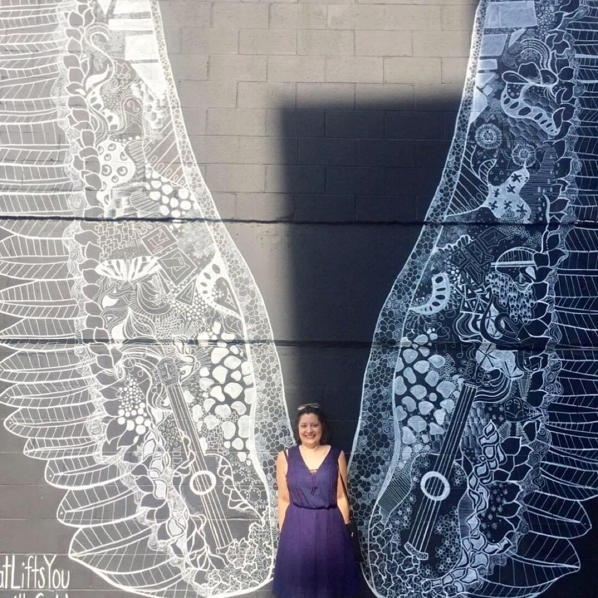

This week we are exploring the seventh and final chakra … the crown chakra. This is the most mystical of them all, as it connects you to the universe and everything it encompasses.⠀
⠀
If you casually drop into conversations that you have reached a oneness with all humanity, you are letting the world know your crown chakra is in flow. You understand the deeper meaning of life, and you are pretty chill about most things that happen to you - or for you, as you might point out. You are guided by a higher power; and you walk in a state of gratitude, trust and faith, instead of fear and anxiety. A balanced seventh chakra allows you to let go, and trust that you are always going to have everything you need to fulfill your earthly purpose. If you aren’t in a relationship yet, you aren’t stressing because you know your special someone will appear at just the right time. ⠀
⠀
When you do land the person of your dreams - who of course also has a balanced crown chakra - your relationship will turn heads because many people think this sort of love only exists in movies. You connect and accept each other on all levels, and your love is unconditional. You have found your soulmate, and your soulmate has found you.⠀
⠀
“Excuse me, universe. Can I have THAT?”⠀
⠀
What happens if you find your love guru but you haven’t achieved zen yet because your crown chakra is blocked? Well, to paraphrase the Bard, the course of this love isn’t going to run smoothly. If your partner believes there is so much more to life than what we know, and you only believe in what can be experienced through the five senses, there are going to be conflicts. You will feel like you are cut off from life and from people, while they are in tune with everyone and everything on earth. You live in fear, and you don’t look forward to the future.⠀
⠀
But don’t worry, all is not lost! A meditation practice can open your crown chakra, and strengthen your connection to the universe and your higher self. But remember: this chakra has a profound impact on our life and the lives of those around us. You need to consistently focus on it to keep it in alignment.⠀
⠀
I hope you enjoyed this love journey through the chakras.
Healer Next Door
Connecting with the Universe
This week we are exploring the seventh and final chakra … the crown chakra. This is the most mystical of them all, as it connects you to the universe and...

A place to begin
You do not have to have it all figured out.
Bring your questions, your skepticism, or simply the sense that something needs to change.